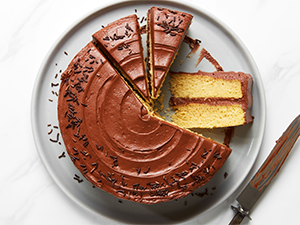

Home
Cake

Description
A cake is a soft, fluffy dessert made with flour, sugar, eggs, and butter or oil. It can be enjoyed on its own or with frosting, fruit, or chocolate.
This recipe gives you a classic vanilla cake that is moist, light, and perfect for birthdays, celebrations, and other special occasions.
Ingredients
For Cake
- 2 cups all-purpose flour
- 1½ cups sugar
- 1 tablespoon baking powder
- ½ teaspoon salt
- ½ cup unsalted butter (softened)
- 1 cup milk
- 2 teaspoons vanilla extract
For Chocolate Frosting
- ½ cup butter (softened)
- 2 cups powdered sugar
- ½ cup cocoa powder
- ¼ cup milk
- 1 teaspoon vanilla extract
Steps
- Preheat your oven to 180°C (350°F). Grease and line two 8-inch round cake pans with parchment paper.
- In a bowl, whisk together the flour, baking powder, salt, and sugar until well combined.
- In a separate large bowl, beat the butter and sugar until the mixture becomes light and fluffy. This usually takes about 3–5 minutes.
- Beat in the eggs one at a time, mixing well after each addition. Add the vanilla extract and mix.
- Gradually add the dry ingredients to the butter mixture, alternating with the milk. Mix gently until the batter is smooth. Avoid overmixing.
- Divide the batter evenly between the prepared pans. Bake for 25–30 minutes, or until a toothpick inserted into the centre comes out clean.
- Allow the cakes to cool in their pans for about 10 minutes. Transfer them to a wire rack and let them cool completely before decorating.
- Beat the softened butter until creamy. Add the powdered sugar and cocoa powder gradually. Pour in the milk and vanilla extract, then beat until smooth and spreadable.
- Spread the chocolate frosting between the cake layers and over the top and sides. You can decorate with chocolate chips, sprinkles, or fresh fruit.